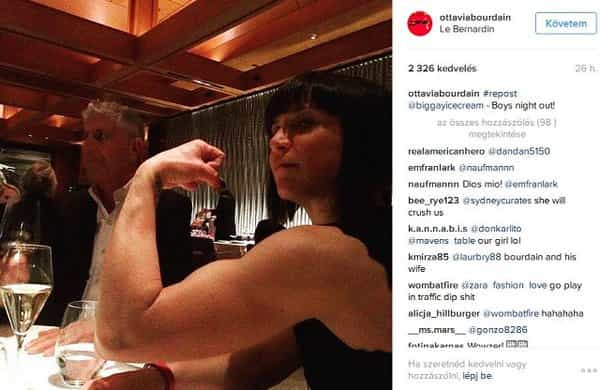
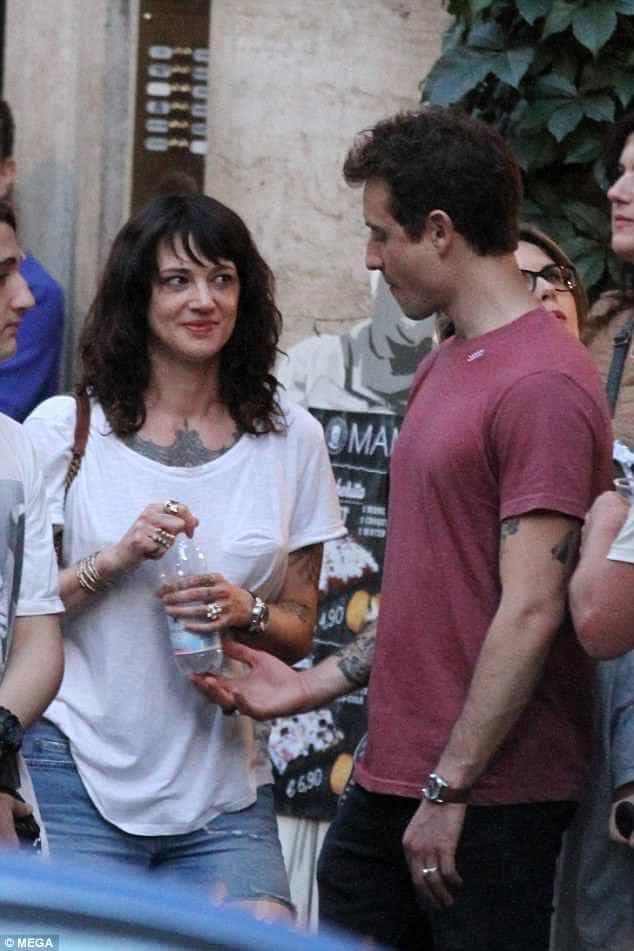

is an aspiring philosopher king, living the dream, travelling the world, hoarding FRNs and ignoring Americunts. He is a European at heart, lover of Latinas, and currently residing in the USA.


Chef and CNN Travel correspondent Anthony Bordain hung himself in his Paris hotel on June 8, 2018. No suicide note was referenced in early reports.
My immediate reaction to hearing this news was recollecting a ROK article on Bourdain’s last wife publicly cucking him. Four months later, they separated.
I have minimal exposure to pozzed media, and did not follow Bourdain. I know he was passionate about food and travel, two of my interests. He created a TV series for the Travel Channel and CNN exposing viewers to exotic foods from all over the world, shunning tourist traps and mainstream hotels in search of an authentic experience.
He was wildly successful, wealthy, and famous. And yet he was unhappy enough to take his own life. We may never know precisely the reasons, but I predict his suicide stems from unhappiness in his personal life.
Objectively the most feminine of his partners
Bordain married his high school girlfriend, Nancy Putkoski, and they stayed in a childless marriage for two decades before divorcing in 2005. If I had married so young, I shudder to think of the horrible decisions I would have made, without learning the reality of women the hard way. Some state they separated because Bourdain was not home often, working long hours first in the kitchen, and later producing his television programs around the world.

In 2007 Bourdain married MMA Fighter Ottavia Busia, having a daughter the same year. This relationship was covered in two ROK articles here and here. Busia was visibly uncommitted to her husband, as seen in numerous photographs and social media postings. Her body language, turning away from her man, bringing the attention to herself, and posing in provocative images with other men were all warning signs, and the couple divorced in 2016, four months after the initial ROK article.
Just Lovely, I’m Sure
Bordain next became involved with the train wreck known as Asia Argento, an Italian actress and feminist. In late 2017, Argento claimed that Harvey Weinstein raped her in the 1990s, after which she had multiple sexual relations with him over many years.
Apologize for having oral sex with a sober adult woman who came on to you, now! You evil white male!
Argento’s Twitter feed is full of anti-slut shaming, feminism, profanity, globohomo promotion, and aggressive masculine imagery. Last week she was spotted publicly humiliating her boyfriend Bourdain.

The media loves to play with the invented idea of “toxic masculinity,” the idea that being masculine is so evil and destructive that it can cause toxic “death or serious debilitation.”
But how often do we see masculinity leading to death? On the other hand, radical feminism has caused countless prominent, powerful, and wealthy men, from Robin Williams, to Freddie Prinze to likely Bordain, to end their lives.
Asia with another man just days before Bourdain’s suicide
Bourdain believed in the blue pilled myth of the gentle, sweet, kind and loyal woman. After being publicly cucked and humiliated by his last 2 partners, did this drive him to suicide?
My sole duty as a parent and as a father, particularly raising a little girl who is going to grow up to be a young woman, is that she will never look to men for affirmation, or anyone else for affirmation
or self-worth or be physically intimidated by anyone. My daughter spinning arm bars is a thing of envy — Ronda Rousey quality
Sadly, Bordain fell for the feminist line that we should encourage women to live free and wild lives without limits. His goal of raising his child to never by physically intimidated by anyone would be unrealistic if he were raising a son, but it’s downright absurd for a daughter.
And a woman who never looks to a man for affirmation is a woman who will be physically and emotionally alone, cold, unloved, and unlikely to listen to her natural feminine nurturing instincts.
Was This What Bourdain Had In Mind?
Ronda Rousey is not the role model for what a woman should be — particularly not a father’s goal for his daughter. While Ronda may be the one in a million who found success in an unlikely career, why would a father yearn for a violent, aggressive, and masculine daughter?
First, we should realize that Bourdain was acting out of love and true desire for the happiness of his daughter when he made his misguided decisions. In the modern world, we are bombarded with societal truths, such as…
It is difficult and time consuming to research and test these hypotheses to see if they are true. And besides, when seemingly all of one’s friends and neighbors are repeating the above mantras, surely doubting them is as wrong as considering whether the earth is really flat, right? It’s much easier to let the media reveal the truth to us. After all, that is their job!
I don’t fault Bourdain, a busy man who married young, spent little time at home, and never learned the red pill. Our society teaches many lies, and I believed most of them for a long time. His wishes for his daughter come from a desire that she is happy and fulfilled. But sadly, masculinity and unrestrained freedom do not bring women happiness.
Asia Argento tweet about university feminists mobilizing against “harassment and abuse”
We are seeing huge experiments with civilization, and so far they seem to be failing. While it is easy to be trapped in the bubble of feminism, and believe that the world has been wrong for the entirety of history, and we are just now setting it right, if one stops to think logically, that doesn’t make any sense.
I have never understood suicide. While I have experienced depression before, I have always thought if things really got so bad that I felt like ending my life, I would just disappear overnight to a third world country and start over. Take $5,000, and head near the equator, and forget all the stresses and personal commitments of the modern world. I’m beginning to think it’s something I should do before depression sets in. But regardless, men should know that suicide is never the answer.
I have seen successful, happy, alpha men fall apart, cry, and even break down in a seizure, over the intense stress and pain a woman caused them. Lack of a good relationship is far preferable to a miserable one. If you are experiencing severe depression, you can get out. The US National Suicide Prevention Phone # is 1-800-273-8255.
Read More: Return of Kings Correctly Predicts the Demise of Anthony Bordain’s Marriage